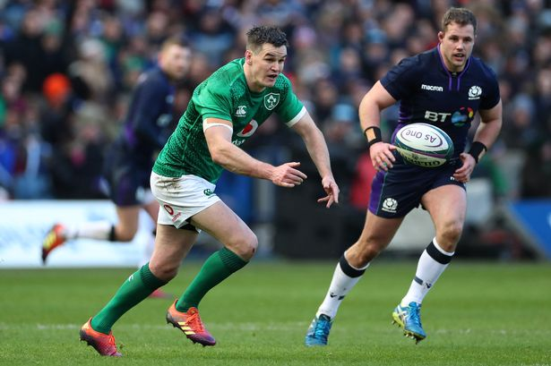

Home
Sport
- 


Sport
Sport
Football
More than 240 million people around the world play soccer regularly according to the Federation Internationale de Football Association (FIFA). The game has evolved from the sport of kicking a rudimentary animal-hide ball around into the World Cup sport it is today.
Records trace the history of soccer back more than 2,000 years ago to ancient China. Greece, Rome, and parts of Central America also claim to have started the sport; but it was England that transitioned soccer, or what the British and many other people around the world call “football,” into the game we know today. The English are credited with recording the first uniform rules for the sport, including forbidding tripping opponents and touching the ball with hands.
As the sport developed, more rules were implemented and more historical landmarks were set. For example, the penalty kick was introduced in 1891. FIFA became a member of the International Football Association Board of Great Britain in 1913. Red and yellow cards were introduced during the 1970 World Cup finals. More recent major changes include goalkeepers being banned from handling deliberate back passes in 1992 and tackles from behind becoming red-card penalties in 1998.
Some of the top players throughout history include Pele (Edson Arantes Do Nascimento) from Brazil, who scored six goals in the 1958 World Cup and helped Brazil claim its first title; Lev Yashin from Russia, who claimed to have saved more than 150 penalty shots during his outstanding goal-tending career; and Marco Van Basten from Holland, who won several very prestigious soccer awards during one year alone. There are many debates over who the greatest soccer players are of all time; but players like Zinedine Zidane, Diego Maradona, Michel Platini, Lionel Messi, and Roberto Baggio make almost every list.
I used to play for my local club Douglas Hall.Douglas Hall was founded in 1971. This was where i learned to play soccer.It is the place where i learned to play soccer.
My Favourite Club Is Man United.
Manchester United Football Club was founded back in 1878 under the name Newton Heath LYR F.C. In 1902, the club's name was changed to Manchester United and the rest is history.No team has more English league titles than United, who surpassed Liverpool after securing their 19th last season. But titles cannot be won without great players, and United have had their fair share of talented footballers.
Rugby
Rugby is said to have originated at Rugby School in Warwickshire, England, in 1823 when during a game of football, William Webb Ellis decided to pick up a ball and go with it. Although there is very little evidence to support this theory, the Rugby World Cup Trophy is now named after William Webb Ellis.
In 1863 a collection of boarding schools and clubs decided upon a rule set and 1871 Rugby Football Union was officially formed. That same year, the first ever international match was played between England and Scotland with Scotland taking the win 1-0.
In 1900, rugby union was introduced to the Summer Olympics by Pierre de Coubertin, who had previously refereed the first French domestic championship as well as France's first international game. France, Germany and Great Britain all entered teams for the oplympics, and France won gold by defeating both opponents.
Rugby actually drew the largest crowd at that particular games - it was next played at the 1908 games in London, with Australia winning, by defeating Great Britain.
Even though rugby drew some of the biggest crowds at the games, it was eventually dropped in 1924.
By 1908 all three major Southern Hemisphere nations (New Zealand, Australia and South Africa) had formed teams and sent them on international trips to play against the Northern Hemisphere nations. As a side fact, the first time the Haka was performed by New Zealand prior to a match was in 1905, which the Welsh responded to by having Teddy Morgan sing the Welsh national anthem. Soon enough the crowd joined in, which was the first time a national anthem was sung prior to a sporting event.
The first Rugby World Cup was played in 1987 and was held in Australia and New Zealand - both semi-finals were played in Australia while the final was played in New Zealand, with the All Blacks defeating France in the final.
My favourite club is Munster and i also support Irish Rugby
Munster Rugby (Irish: Rugbaí Mumhan) is one of the four professional provincial rugby teams from the island of Ireland. They compete in the Pro14 and the European Rugby Champions Cup. The team represents the IRFU Munster Branch, which is one of four primary branches of the IRFU, and is responsible for rugby union throughout the geographical Irish province of Munster.[4] The team motto is "To the brave and faithful, nothing is impossible." This is derived from the motto of the MacCarthy clan – "Forti et Fideli nihil difficile". Their main home ground is Thomond Park, Limerick, though some games are played at Irish Independent Park, Cork.
The Irish Rugby Football Union (IRFU) (Irish: Cumann Rugbaí na hÉireann) is the body managing rugby union in the island of Ireland (both Republic of Ireland and Northern Ireland). The IRFU has its head office at 10/12 Lansdowne Road and home ground at Aviva Stadium, where adult men's Irish rugby union international matches are played. In addition, the Union also owns the Ravenhill Stadium in Belfast, Thomond Park in Limerick and a number of grounds in provincial areas that have been rented to clubs.